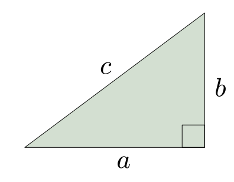

due: Friday, September 30, 11:59 PM
The Pythagorean Theorem says that positive numbers \(a\), \(b\), \(c\) are lengths of sides of a right triangle if and only if \(a^2 + b^2 = c^2\).
An interesting problem is to determine which triples of integers satisfy this equation.
Definiton. A triple of positive integers \((a, b, c)\) such that \(a^2 + b^2 = c^2\) is called a Pythagorean triple.
Example. \((3, 4, 5)\) is a Pythagorean triple since \(3^2 + 4^2 = 5^2\).
Note. In order to find a Pythagorean triple it is enough to find a couple of positive integers \((a, b)\) such that \(\sqrt{a^2 + b^2}\) is also an integer. This gives a Pythagorean triple \((a, b, c)\) where \(c = \sqrt{a^2 + b^2}\). We will say in such case that \((a, b)\) is a Pythagorean tuple.
The goal of this project is to investigate the structure of Pythagorean triples.
Part 1. Write a function ptriples(n) that takes as its argument
a number \(n\) and returns a list of all Pythagorean triples \((a, b, c)\)
where \(1 \leq a, b \leq n\):
ptriples(20)
[[3, 4, 5], [4, 3, 5], [5, 12, 13], [6, 8, 10], [8, 6, 10], [8, 15, 17], [9, 12, 15], [12, 5, 13], [12, 9, 15], [12, 16, 20], [15, 8, 17], [15, 20, 25], [16, 12, 20], [20, 15, 25]]
Part 2. Plot all Pythagorean tuples \((a, b)\) where \(1\leq a, b \leq n\) for various values of \(n\).
Part 3. Describe and analyze the structure of Pythagorean tuples.
{kind=link}